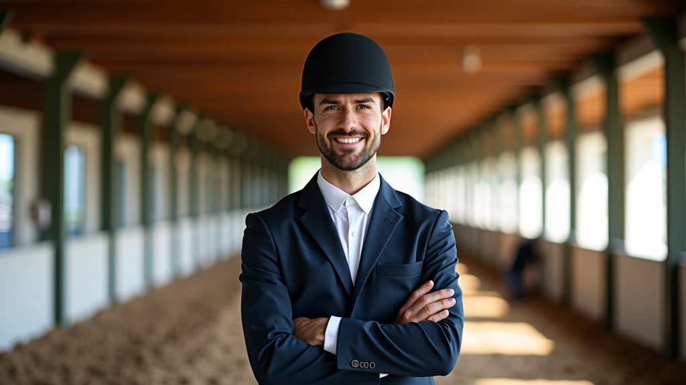
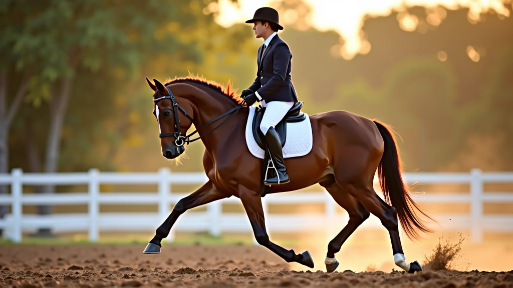
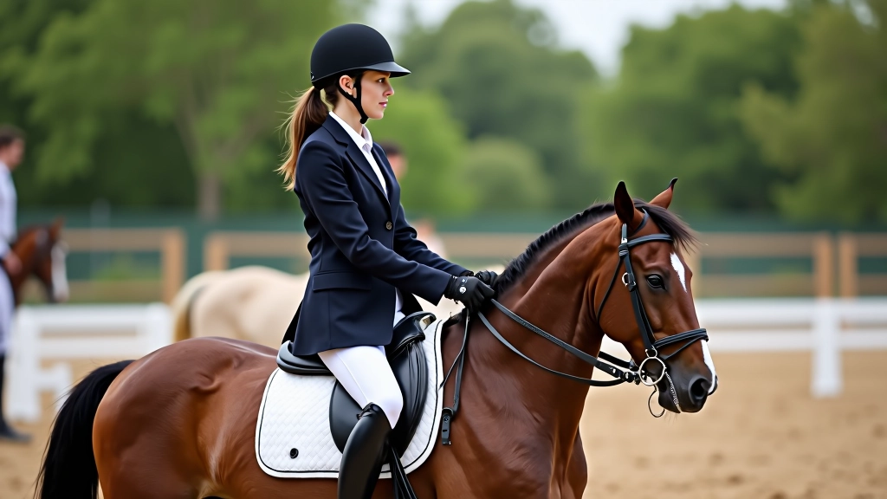

برنامج تدريب شامل 8 أسابيع
خطة منظمة وعملية لتعليم حصانك تغيير القدم بثقة واحترافية
تغيير القدم في العدو يُعتبر من أهم المهارات المتقدمة في ركوب الخيل. هذا البرنامج يوفر لك خطة عملية مدتها 8 أسابيع تجمع بين التحضير الأساسي والتدريب المتدرج. سواء كنت فارساً مبتدئاً أو لديك خبرة، ستجد هنا الأدوات والتقنيات التي تحتاج إليها.
الهدف: تطوير قدرة الحصان على تغيير قدمه بسلاسة وثقة، مع بناء القوة والتوازن التدريجي.
نظرة عامة على مراحل البرنامج
البرنامج مقسم إلى أربع مراحل أساسية. الأسابيع الأولى تركز على التحضير البدني والتدريب الأساسي للحصان. بعدها ننتقل للتمارين المتخصصة والتطبيق العملي. كل مرحلة بناء على السابقة، مما يضمن تطوراً آمناً وثابتاً.


ما الذي ستتعلمه فعلياً
هذا البرنامج لا يقدم فقط النظرية. أنت ستتعلم تقنيات حقيقية وعملية. تبدأ بفهم كيفية يعمل الحصان من الناحية البدنية والعصبية. بعدها تنتقل للتطبيق المباشر على ظهر الحصان.
التفاصيل الأسبوعية
كل أسبوع له أهداف محددة وتمارين معينة. النظام يتطلب اتساقاً — عادة 3 جلسات في الأسبوع، 45 إلى 60 دقيقة لكل جلسة.
البدء والتقييم
تقييم حالة الحصان الحالية. تمارين الحنو والمرونة. بناء علاقة ثقة قوية مع حصانك. لا تتوقع نتائج سريعة — هذا أسبوع لفهم نقطة البداية.
تقوية الأساس
تمارين الدوائر والخطوط المستقيمة. العمل على التوازن الجانبي. تحسين استجابة الحصان للإشارات الخفيفة. الحصان يبدأ يشعر بالثقة أكثر.
تطوير القدرة
زيادة شدة التمارين تدريجياً. العمل على قوة الأرجل الخلفية. تمارين العدو بأنماط مختلفة. الحصان يكتسب عضلات قوية ومرنة.
التثبيت والاستقرار
تكرار التمارين السابقة مع إضافة عناصر تحدي. العمل على الثبات والاستقرار في الأداء. قياس التقدم الملموس. نقطة فحص مهمة قبل المرحلة التالية.
البدء بتغيير القدم
التمارين التحضيرية المباشرة لتغيير القدم. عمل على تقوية عضلات محددة. الحصان يبدأ يفهم الإشارة المطلوبة. قد لا تحصل على نتيجة كاملة بعد، لكن الأساس يتشكل.
التقدم المرئي
محاولات فعلية لتغيير القدم. البعض سينجح مباشرة، والآخرون سيحتاج إلى صبر أكثر. تحسن ملموس في التوازن والاستجابة. الحصان يصبح أقوى وأكثر مرونة.
الإتقان التدريجي
تكرار تغيير القدم حتى يصبح طبيعياً. العمل على الاستقرار والسلاسة. زيادة السرعة والارتفاع تدريجياً. معظم الخيول تصل هنا لمستوى جيد من الأداء.
التطبيق والصقل
استخدام تغيير القدم في سياقات مختلفة. الحفاظ على الأداء تحت ضغط. بناء روتين تدريب للحفاظ على المهارة. إعادة تقييم الأهداف للمرحلة التالية.
نصائح عملية تحسن النتائج
لا تقتصر على الجدول الزمني. هناك أشياء أخرى تؤثر على سرعة التطور. التغذية، الراحة، والحالة النفسية للحصان — كل هذا مهم.
الاتساق أهم من الشدة
ثلاث جلسات منتظمة في الأسبوع أفضل من جلسة واحدة مكثفة. الحصان يحتاج وقتاً لاستيعاب وتطبيق ما تعلمه.
راقب تقدم الحصان الفردي
كل حصان مختلف. بعضها سريع في التعلم، وآخر يحتاج وقتاً أطول. لا تقارن حصانك بآخر. ركز على تطوره هو.
أضف فترات راحة منتظمة
الراحة جزء من التدريب. يوم واحد راحة كل أسبوع يسمح للحصان بالتعافي وتقوية العضلات. لا تتجاهل هذا.
احتفل بالإنجازات الصغيرة
كل خطوة للأمام تستحق التقدير. حتى محاولة فاشلة هي جزء من عملية التعلم. حافز نفسك وحصانك.

التحديات الشائعة وكيفية التعامل معها
الكثير من الفرسان يواجهون نفس المشاكل. هنا الحلول العملية:
الحصان يرفض تغيير القدم
قد يكون الحصان غير جاهز بدنياً بعد. ارجع للتمارين التحضيرية. تأكد أن الحصان يفهم الإشارة قبل أن تتوقع الأداء الكامل. الصبر مفتاح النجاح هنا.
تقدم بطيء أكثر من المتوقع
قد تحتاج لتمديد بعض الأسابيع. بعض الخيول تحتاج وقتاً إضافياً. هذا طبيعي تماماً. استمر بنفس الطريقة لكن بدون عجلة. النتائج ستأتي.
الحصان يبدو متعباً
قلل شدة التمارين. أضف يوم راحة إضافي. تحقق من التغذية والرعاية الصحية. الإرهاق البدني يعيق التقدم، لا يسرعه.
فقدان التركيز والحافز
تنويع التمارين يساعد. لا تركز على تغيير القدم طول الوقت. أضف أشياء ممتعة وتحديات أخرى. التدريب يجب أن يكون ممتعاً للطرفين.
ملاحظة مهمة
نتائج التدريب تختلف من حصان لآخر. هذا البرنامج يقدم إرشادات عملية موثوقة، لكن كل حصان له احتياجاته الخاصة. إذا واجهت مشاكل صحية أو سلوكية خطيرة، استشر طبيباً بيطرياً أو مدرباً متخصصاً قبل المتابعة.
الخطوة التالية
هذا البرنامج يعطيك خريطة واضحة للـ 8 أسابيع القادمة. لكن التطبيق العملي هو ما يحدث الفرق. ابدأ من الأسبوع الأول بدون عجلة. راقب تطور حصانك. احتفل بكل نجاح صغير. بعد 8 أسابيع من الالتزام والعمل المنتظم، ستلاحظ تحسناً واضحاً جداً.
تذكر: الهدف ليس فقط تعليم تغيير القدم. الهدف الأساسي هو بناء حصان قوي وصحي وواثق من نفسه. وفارس قادر على التواصل معه بفعالية.

فريق أكاديمية الأهرام للفروسية التحرير
فريق التحرير والمحتوى
كتبه فريق تحرير أكاديمية الأهرام للفروسية، متخصص في تقديم إرشادات عملية وموثوقة حول تدريب الخيل.